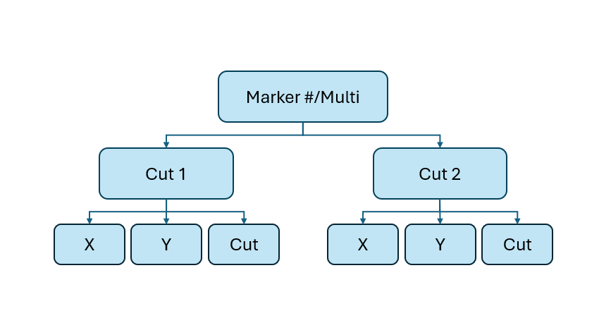
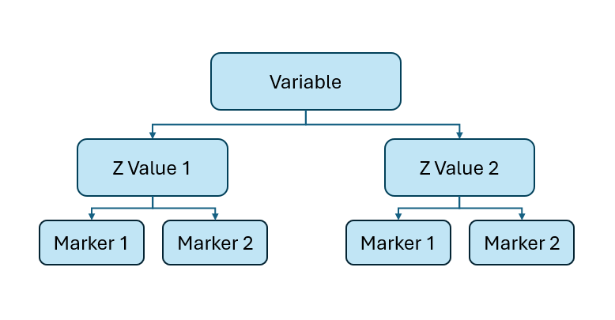

Data Output
No matter which tool you use the GUI will download the transect data into a JSON file. If you’re unfamiliar with this data structure, it is equivalent to nested python dictionaries or lists in many other programming languages. It is a common file type that is supported by many software and programming languages, however an easy way to access it is using the python json library:
import json f = open("_FILE_NAME_.json") dat = json.load(f)
This will load the data into a dictionary which you can easily manipulate for your purposes.
File Structure
The output JSON file has a hierarchical data structure that depends on the tool you used and the file you loaded.
When taken from an image, the data will be simply organized into one or multiple Marker sub-dictionaries which contain one or multiple Cut sub-dictionaries which each contain arrays of the x coordinates, y coordinates, and the transect values of each transect.

When the data is taken with the transect tool, the dictionary is labeled as Multi instead of Marker #
The transect values are the mean of the RGB values of the pixel at each point. The data is interpolated for smoothness.
When taken from a NetCDF file the markers are further nested into dictionaries first according to the selected variables and then the selected z dimension values chosen (if the variables has 3 dimensions).

When the data is taken with the transect tool, the dictionary is labeled as Multi instead of Marker #
The transect values are the value of the corresponding dataset of the file at that x, y coordinate. The data is interpolated for smoothness.